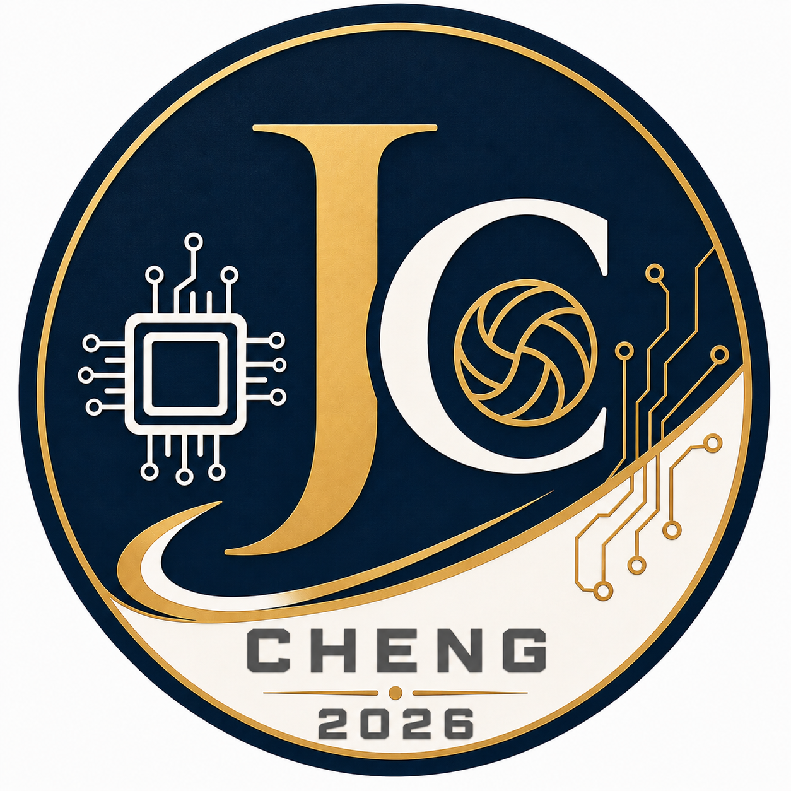

Analog IC Design Notes / LDO / Bandgap / Power Management / Small-signal Analysis
Hi, I am an analog IC designer with 4+ years of experience in USB Power Delivery applications. I am passionate about circuit analysis, continuous learning, and knowledge sharing.
Small-signal model, output pole, ESR zero, load transient, and compensation.
Read morePractical IC debugging cases from design, simulation, evaluation, and production.
Read moreGitHub: ninjaanalog